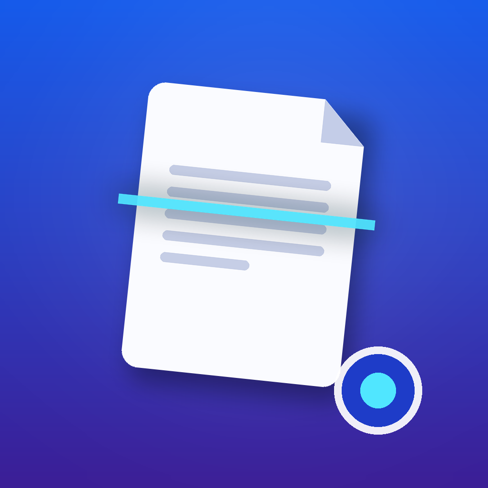

Numérisez, organisez et partagez vos documents en un instant.
Transformez votre iPhone en scanner de poche. Détection automatique des bords, recadrage intelligent, OCR et export PDF haute qualité.
Détection automatique des contours, correction de perspective et amélioration de la lisibilité pour des scans parfaits.
Extrayez le texte de vos scans et effectuez des recherches dans l'ensemble de vos documents en quelques secondes.
Classez vos documents par tags, dossiers et dates. Retrouvez n'importe quel fichier instantanément grâce à la recherche avancée.
Vos documents restent sur votre appareil. Verrouillez l'accès avec Face ID ou Touch ID pour une tranquillité totale.
Vos scans sont automatiquement sauvegardés et synchronisés sur tous vos appareils Apple via iCloud.
Partagez en PDF, JPEG ou PNG. Envoyez par e-mail, AirDrop ou enregistrez directement dans l'application Fichiers.
Oui, la version de base est entièrement gratuite. Des fonctionnalités avancées (OCR illimité, synchronisation multi-appareils) sont disponibles via un abonnement optionnel.
Non, tous les scans sont traités et stockés localement sur votre iPhone. Si vous activez la synchronisation iCloud, ils sont chiffrés et stockés dans votre espace iCloud personnel.
Absolument. DocScanner vous permet de scanner plusieurs pages à la suite et de les combiner en un seul document PDF.
Oui, la reconnaissance de texte prend en charge le français et plus de 20 autres langues.
Téléchargez DocScanner gratuitement et simplifiez votre vie numérique.